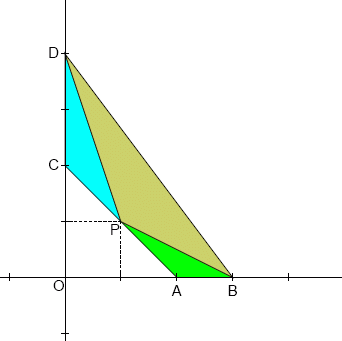

Four points with integer coordinates are selected:
$A(a, 0)$, $B(b, 0)$, $C(0, c)$ and $D(0, d)$, with $0 \lt a \lt b$ and $0 \lt c \lt d$.
Point $P$, also with integer coordinates, is chosen on the line $AC$ so that the three triangles $ABP$, $CDP$ and $BDP$ are all similarHave equal angles.

It is easy to prove that the three triangles can be similar, only if $a = c$.
So, given that $a = c$, we are looking for triplets $(a, b, d)$ such that at least one point $P$ (with integer coordinates) exists on $AC$, making the three triangles $ABP$, $CDP$ and $BDP$ all similar.
For example, if $(a, b, d)=(2,3,4)$, it can be easily verified that point $P(1,1)$ satisfies the above condition. Note that the triplets $(2,3,4)$ and $(2,4,3)$ are considered as distinct, although point $P(1,1)$ is common for both.
If $b + d \lt 100$, there are $92$ distinct triplets $(a, b, d)$ such that point $P$ exists.
If $b + d \lt 100\,000$, there are $320471$ distinct triplets $(a, b, d)$ such that point $P$ exists.
If $b + d \lt 100\,000\,000$, how many distinct triplets $(a, b, d)$ are there such that point $P$ exists?
No test cases available.